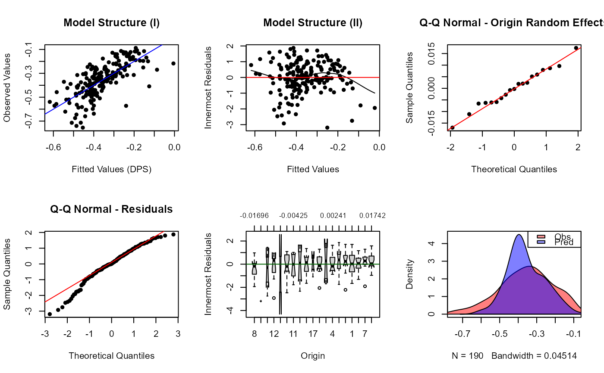

Implements Murphy et al., (2010) gravity model
Arguments
- y
Name of dependent variable
- x
Character vector of independent variables
- d
Name of column containing distance
- group
Name of grouping column (from or to)
- data
data.frame object containing model data
- ln
Natural log transform data (TRUE/FALSE)
- constrained
Specify constrained model, if FALSE a linear model (lm) is run (TRUE/FALSE)
- ...
Additional argument passed to nlme or lm
Value
formula Model formula call fixed.formula Model formula for fixed effects random.formula Model formula for random (group) effects (only for constrained models) gravity Gravity model fit Model Fitted Values AIC AIC value for selected model RMSE Root Mean Squared Error (based on bias corrected back transform) log.likelihood Restricted log-likelihood at convergence group.names Column name of grouping variable groups Values of grouping variable x data.frame of x variables y Vector of y variable constrained TRUE/FALSE indicating if model is constrained
Details
The "group" factor defines the singly constrained direction (from or to) and the grouping structure for the origins. To specify a null (distance only or IBD) model just omit the x argument.
By default constrained models are fit by maximizing the restricted log-likelihood (REML), for maximum likelihood use the type="ML" argument which is passed to the lme function. If ln=TRUE the input data will be log transformed
References
Murphy, M. A. & J.S. Evans. (in prep). GenNetIt: graph theoretical gravity modeling for landscape genetics
Murphy M.A., R. Dezzani, D.S. Pilliod & A.S. Storfer (2010) Landscape genetics of high mountain frog metapopulations. Molecular Ecology 19(17):3634-3649
See also
groupedData for how grouping works in constrained model
lme for constrained model ... options
lm for linear model ... options
Examples
library(nlme)
data(ralu.model)
# Gravity model
x = c("DEPTH_F", "HLI_F", "CTI_F", "cti", "ffp")
( gm <- gravity(y = "DPS", x = x, d = "DISTANCE", group = "FROM_SITE",
data = ralu.model, ln = FALSE) )
#> [1] "Running singly-constrained gravity model"
#> Gravity model
#>
#> Linear mixed-effects model fit by REML
#> Data: gdata
#> AIC BIC logLik
#> -280.1398 -251.2545 149.0699
#>
#> Random effects:
#> Formula: DPS ~ 1 | FROM_SITE
#> (Intercept) Residual
#> StdDev: 0.01875411 0.1007295
#>
#> Fixed effects: list(fmla)
#> Value Std.Error DF t-value p-value
#> (Intercept) -5.926103 1.4920658 168 -3.971744 0.0001
#> DEPTH_F 0.025633 0.0094633 15 2.708728 0.0162
#> HLI_F 0.156871 0.1316072 15 1.191962 0.2518
#> CTI_F -0.048095 0.0401198 15 -1.198791 0.2492
#> cti -0.197073 0.0869938 168 -2.265362 0.0248
#> ffp 0.910712 0.1430268 168 6.367426 0.0000
#> DISTANCE -0.109680 0.0118781 168 -9.233851 0.0000
#> Correlation:
#> (Intr) DEPTH_ HLI_F CTI_F cti ffp
#> DEPTH_F -0.579
#> HLI_F -0.812 0.833
#> CTI_F 0.329 -0.674 -0.583
#> cti -0.050 0.028 0.035 -0.115
#> ffp -0.797 0.124 0.321 0.009 -0.159
#> DISTANCE -0.270 0.066 0.125 -0.072 0.461 0.145
#>
#> Standardized Within-Group Residuals:
#> Min Q1 Med Q3 Max
#> -3.19045601 -0.46459488 0.01573003 0.66508837 1.87341262
#>
#> Number of Observations: 190
#> Number of Groups: 19
#' # Plot gravity results
par(mfrow=c(2,3))
for (i in 1:6) { plot(gm, type=i) }

# log likelihood of competing models
x = c("DEPTH_F", "HLI_F", "CTI_F", "cti", "ffp")
for(i in x[-1]) {
x1 = c(x[1], x[-which(x %in% i)])
ll <- gravity(y = "DPS", x = x1, d = "DISTANCE", group = "FROM_SITE",
data = ralu.model, ln = FALSE)$log.likelihood
cat("log likelihood for parameter set:", "(",x1,")", "=", ll, "\n")
}
#> [1] "Running singly-constrained gravity model"
#> log likelihood for parameter set: ( DEPTH_F DEPTH_F CTI_F cti ffp ) = 149.4722
#> [1] "Running singly-constrained gravity model"
#> log likelihood for parameter set: ( DEPTH_F DEPTH_F HLI_F cti ffp ) = 150.6738
#> [1] "Running singly-constrained gravity model"
#> log likelihood for parameter set: ( DEPTH_F DEPTH_F HLI_F CTI_F ffp ) = 148.0972
#> [1] "Running singly-constrained gravity model"
#> log likelihood for parameter set: ( DEPTH_F DEPTH_F HLI_F CTI_F cti ) = 133.9164
# Distance only (IBD) model
gravity(y = "DPS", d = "DISTANCE", group = "FROM_SITE",
data = ralu.model, ln = FALSE)
#> [1] "Running singly-constrained gravity model"
#> Gravity model
#>
#> Linear mixed-effects model fit by REML
#> Data: gdata
#> AIC BIC logLik
#> -264.6706 -251.7248 136.3353
#>
#> Random effects:
#> Formula: DPS ~ 1 | FROM_SITE
#> (Intercept) Residual
#> StdDev: 0.08183053 0.1047401
#>
#> Fixed effects: list(fmla)
#> Value Std.Error DF t-value p-value
#> (Intercept) 0.6020489 0.08814025 170 6.830579 0
#> DISTANCE -0.1295575 0.01137055 170 -11.394132 0
#> Correlation:
#> (Intr)
#> DISTANCE -0.971
#>
#> Standardized Within-Group Residuals:
#> Min Q1 Med Q3 Max
#> -3.1725334 -0.4099091 0.1452196 0.6313571 1.7663818
#>
#> Number of Observations: 190
#> Number of Groups: 19